Motivation for unfolding
In any experimental setup the measuring device will have imperfections such as finite resolution, limited acceptance or detection efficiency. These imperfections will result in a measurement that is distorted from nature. Correcting for these distortions is known as unfolding. The general motivation for unfolding is to get results that are not measurement device dependent and can be compared with the results of other experiments. It should be noted that it is not always necessary to unfold. In case one wants to compare a measurement to a theoretical prediction it is often easier to simulate the detector effects on the theoretical prediction.
However, for a measurement to retain its value over time and be comparable with possible future theoretical predictions the detector response, in one form or another, should be preserved as well. This is often impractical. Unfolding provides a result which can be directly compared with those of other experiments and theoretical predictions.
Mathematical formulation
Lets assume we have some measurable quantity, eg. the transverse momentum of a particle, respresented by the random variable with probability density function . Each measured value has a true value for a random variable with probability density function . These two pdfs are related by a convolution
where is the response function. In particle physics, the measured quantities are binned into histograms so we will focus on the discretized version of the problem. The above convolution changes to the linear equation
with being the -vector of expectation values for the bins of observed variable and being the -vector of expectation values for the histogram of . The histogram of the actual observed data is given by the -vector . The response matrix is a matrix and has an interpretation of a conditional probability.
The observed data , their expectation values , the response matrix and the expectation values of the true histogram are finally related by
Building the response matrix
The first step of unfolding is building the response matrix. Here we assume that the analyst has chosen an observable to unfold, a Monte Carlo simulation to fill the expected truth distribution and a detector simulation to fill the expected reconstructed distribution . The result is a table of events with a true and reconstructed value of the chosen observable. Lets assume we filled a 2D histogram with the reconstructed values on the x-axis and the true values on the y-axis. Recall that
These probabilities can be approximated in the limit of many events by
and
The response matrix element can therefore be approximated by
One should note that this approximation will hold for diagonal matrix elements and the ones close to the diagonal i.e. the elements corresponding to heavily populated bins. One can change the binning to increase the bin counts or apply some sort of smoothing to ensure the validity of the response matrix.
Efficiency
In the above we assumed that for every true value there is a corresponding recontructed value. However, in reality the detector will have an efficiency resulting in a fraction of the true events not being reconstructed. Because one can only use events with both a true and reconstructed value to fill the histogram the sum will no longer be equal to the total number of generated events. Instead one needs to fill a 1D histogram with all the true values and use that to calculate the response matrix.
The efficiency i.e. the number of events from truth bin that are reconstructed in any bin is then
Code Example
Lets start with some code that simulates event generation. In this example we use RooFit classes to sample values from a falling distribution.
// A variable for the truth distribution.
RooRealVar xtrue("xtrue","xtrue",-5,5);
// A parameter of the falling distribution defining the shape.
RooRealVar lambda("lambda","lambda",-0.00035);
// The falling distribution.
RooExponential truthPDF("truthPDF","truthPDF", xtrue, lambda);
Define some simple variable dependent smearing and efficiency function.
Double_t Smear(Double_t xtrue){
// Simulate efficiency.
Double_t xeff= 0.3 + (1.0-0.3)/20*(xt+10.0);
Double_t x= gRandom->Rndm();
if (x>xeff) return -1;
// Simulate smearing.
Double_t xsmear= gRandom->Gaus(0,0.05*xtrue);
return xt+xsmear;
}
Define the binning of the truth and reconstructed distribution.
Double_t reco_binning[26] = {0,1,2,3,4,5,6,7,8,9,10,11,12,13,14,15,16,17,18,20,25,30,35,40,50,60};
Double_t truth_binning[13] = {0,2,4,6,8,10,12,14,18,25,35,45,60};
TH1D* truthHist = new TH1D("truthHist","truthHist",12,truth_binning);
TH1D* recoHist = new TH1D("recoHist","recoHist",25,reco_binning);
TH2D* responseHist = new TH2D("response","response", 25, reco_binning, 12, truth_binning);
Define the histograms for some data to unfold and a truth distribution to compare the unfolding results with.
TH1D* truthTestHist = new TH1D("truthTestHist","truthTestHist",12,truth_binning);
TH1D* dataHist = new TH1D("dataHist","dataHist",25,reco_binning);
Loop over the generated events, smear them and use them to fill the histograms.
// Realistically, there are more MC events than data events available.
Int_t n_MC_events = 500000;
Int_t n_data_events = 10000;
// Calculate the lumi weight with which the MC will be scaled down.
Double_t lumiScale = (double)n_data_events/n_MC_events;
// Generate the events;
RooDataSet* MCEvents = truthPDF.generate(xtrue,n_MC_events);
RooDataSet* dataEvents = truthPDF.generate(xtrue,n_data_events);
// Loop over both datasets and fill the histograms.
for (int i = 0; i < n_MC_events; i++){
Double_t xtrue_val = ((RooRealVar*)(MCEvents->get(i))->find(xtrue.GetName()))->getVal();
Double_t xreco_val = Smear(xtrue_val);
truthHist->Fill(xtrue_val, lumiScale);
if (xreco_val > 0){
recoHist->Fill(xreco_val, lumiScale);
responseHist->Fill(xreco_val, xtrue_val, lumiScale);
}
}
for (int i = 0; i < n_data_events; i++){
Double_t xtrue_val = ((RooRealVar*)(dataEvents->get(i))->find(xtrue.GetName()))->getVal();
Double_t xreco_val = Smear(xtrue_val);
truthTestHist->Fill(xtrue_val);
if (xreco_val > 0){
dataHist->Fill(xreco_val);
}
}
Create a factory object that will build the response matrix and book keep all of the histograms.
RooUnfoldSpec spec("unfold","unfold",truthHist,"obs_truth",recoHist,"obs_reco",responseHist,NULL,dataHist,false,0.0005);
Input distributions 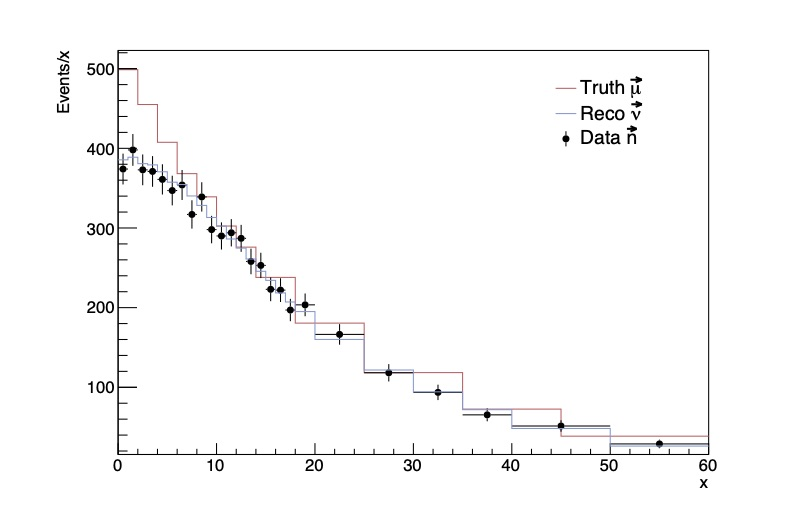 Unnormalized response matrix 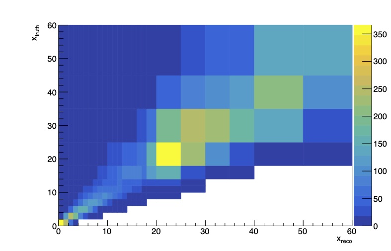
Matrix inversion and bin-by-bin
In this section we will discuss two unfolding methods i.e. two approaches for building estimators for the true distribution . These methods can be used in certain scenarios but often will show to give unsatisfactory results.
Matrix inversion
Suppose the response matrix can be inverted. In that case, one can write
A reasonable choice of estimators for would then be
One can show that this is equivalent to a maximum likelihood(ML) solution under the assumption that the elements of the data vector are independent and Poisson distributed around mean . In case the off-diagonal elements of the response matrix are large the estimator will have large variances and strong negative correlations.
Show response matrix, truth, reconstructed, data and largely fluctuating estimator of the truth histogram.
The small fluctuations in are "seen by " as a fine structure that is enlarged in the estimators. One should note though that the ML/matrix inversion estimators are unbiased and have the smallest possible variance. We will show later that in order to reduce the variance one needs to introduce some bias by regularization.
Bin-by-bin
An alternative method with much smaller variances is applying bin-by-bin correction factors.
with
This method is effectively the same as applying the matrix inversion method with all the off-diagonal elements set to zero. This will reduce the variance substantially but also introduce some bias. Both the matrix inversion and the bin-by-bin methods can be reasonable solutions in case of very small off-diagonal response matrix elements. However, often one needs to apply some form of regularization that constrains -space in which solutions are deemed reasonable.
Code Example
Lets use the generated data to unfold with both matrix inversion and bin-by-bin.
// Instantiate a RooUnfoldFunc
RooUnfoldFunc* unfoldFuncInvert = (RooUnfoldFunc*)spec.makeFunc(RooUnfolding::kInvert);
RooUnfoldFunc* unfoldFuncBBB = (RooUnfoldFunc*)spec.makeFunc(RooUnfolding::kBinByBin);
// Instantiate a RooUnfold object with RooFitHist as template type.
RooUnfoldT<RooUnfolding::RooFitHist,RooUnfolding::RooFitHist>* unfoldInvert = const_cast<RooUnfoldT<RooUnfolding::RooFitHist,RooUnfolding::RooFitHist>*>(unfoldFuncInvert->unfolding());
RooUnfoldT<RooUnfolding::RooFitHist,RooUnfolding::RooFitHist>* unfoldBBB = const_cast<RooUnfoldT<RooUnfolding::RooFitHist,RooUnfolding::RooFitHist>*>(unfoldFuncBBB->unfolding());
// Unfold and get the unfolded distribution and errors.
TVectorD invertUnfolded = unfoldInvert->Vunfold();
TVectorD invertErrors = unfoldInvert->EunfoldV(RooUnfolding::kErrors);
TVectorD BBBUnfolded = unfoldBBB->Vunfold();
TVectorD BBBErrors = unfoldBBB->EunfoldV(RooUnfolding::kErrors);
Distribution unfolded with matrix inversion 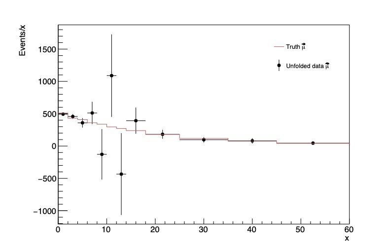 Distribution unfolded with Bin-by-bin 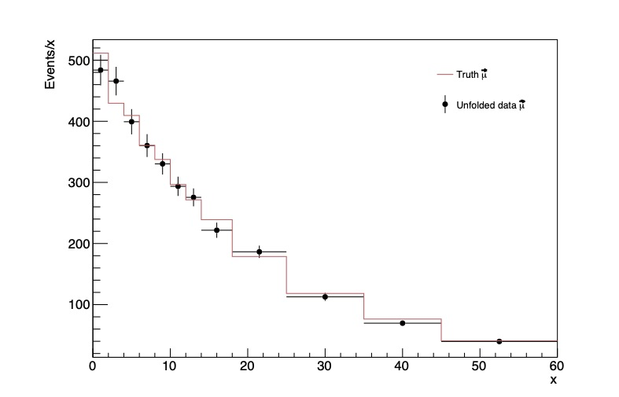
Regularization and bias-variance trade-off
Recall that the observed data is independent and Poisson distributed around . We can therefore construct the following log-likelihood.
The solution that maximizes this likelihood is i.e. the matrix inversion solution. This is an example of overfitting and can be avoided by introducing some constraint on the likelihood maximization in the form of a regularization function.
Here the regularization function introduces some form of prior knowledge on what the solution should look like i.e. it introduces bias but reduces the variance of the estimator . This is also known as the bias-variance trade-off. Both variance and bias are sources of error on the predictive model that is the truth estimator . The regularization parameter determines where this bias-variance trade-off will lie.
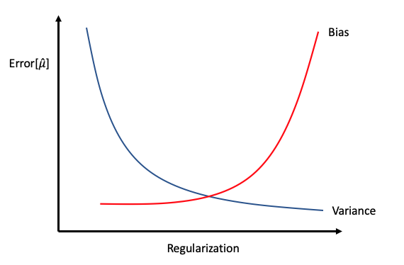
We will discuss later how to choose the regularization paremeter. The choice of depends on the problem but often is chosen to impose some amount of smoothness on the estimator eg. with Tikhonov or entropy-based regularization. In the following section we will discuss some unfolding algorithms and their form of regularization that are commonly used in particle physics.
Tikhonov regularization
A very common choice of is one based on the derivatives of the true distribution. Tikhonov regularization constructs a regularization function by taking the square of the -th derivative of the true distribution. For and with finite differences the regularization function is
This function quantifies the amount of curvature the true distribution has. Distributions such as the ML solution have very large second derivatives and are therefore penalized heavily.
A. N. Tikhonov and V. Y. Arsenin. Solutions of Ill-posed problems. W.H. Winston, 1977.
Code Example
RooUnfold has two Tikhonov regularized unfolding implementations: RooUnfoldSVD and RooUnfoldTUnfold. RooUnfoldSVD will be discussed seperately in an upcoming section. TUnfold implements a Gaussian likelihood and calculates the unfolded distribution with a closed form.
// Instantiate a RooUnfoldFunc. Pass the regularization parameter tau=0.001.
RooUnfoldFunc* unfoldFuncTUnfold = (RooUnfoldFunc*)spec.makeFunc(RooUnfolding::kTUnfold,0.001);
// Instantiate a RooUnfold object with RooFitHist as template type.
RooUnfoldT<RooUnfolding::RooFitHist,RooUnfolding::RooFitHist>* unfoldTUnfold = const_cast<RooUnfoldT<RooUnfolding::RooFitHist,RooUnfolding::RooFitHist>*>(unfoldFuncTUnfold->unfolding());
// Unfold and get the unfolded distribution and errors.
TVectorD tunfoldUnfolded = unfoldTUnfold->Vunfold();
TVectorD tunfoldErrors = unfoldTUnfold->EunfoldV(RooUnfolding::kErrors);
Gaussian likelihood and Tikhonov regularization with and
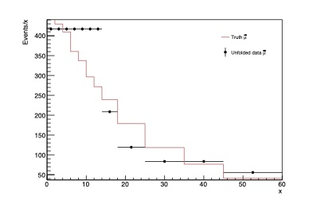 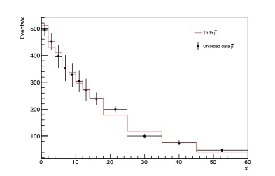
Gaussian likelihood and Tikhonov regularization with and 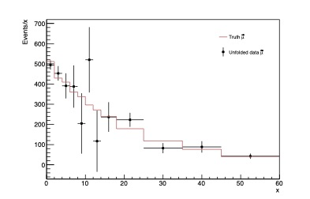 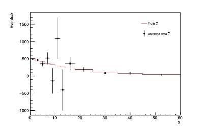
Richardson-Lucy (Iterative Bayes)
The Richardson-Lucy algorithm, or iterative bayes unfolding as described by D’Agostini in, is an unfolding procedure that updates the estimator with each iteration. The estimator is defined as
for the -th bin and iterations. The analyst needs to supply an initial truth distribution . The number of iterations determines the amount of regularization where few iterations will result in an estimator with small variance but will be biased towards this initial truth distribution. The bias-variance balance can be tipped in the other direction by increasing the number of iterations. In the limit of many iterations it is emperically shown that the estimator will converge to the ML estimator.
W. H. Richardson. Bayesian-based iterative method of image restoration. J. Opt. Soc. Am., 62(1):55–59, Jan 1972.
L. B. Lucy. An iterative technique for the rectification of observed distributions. 79:745, Jun 1974.
G. D’Agostini. A multidimensional unfolding method based on bayes theorem. 1995. Nucl. Instrum. Meth. A 362 (1995) 487.
Code Example
// Instantiate a RooUnfoldFunc. Pass the regularization parameter r=20.
RooUnfoldFunc* unfoldFuncBayes = (RooUnfoldFunc*)spec.makeFunc(RooUnfolding::kBayes,20);
// Instantiate a RooUnfold object with RooFitHist as template type.
RooUnfoldT<RooUnfolding::RooFitHist,RooUnfolding::RooFitHist>* unfoldBayes = const_cast<RooUnfoldT<RooUnfolding::RooFitHist,RooUnfolding::RooFitHist>*>(unfoldFuncBayes->unfolding());
// Unfold and get the unfolded distribution and errors.
TVectorD bayesUnfolded = unfoldBayes->Vunfold();
TVectorD bayesErrors = unfoldBayes->EunfoldV(RooUnfolding::kErrors);
Iterative bayes with and
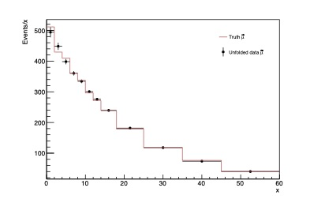 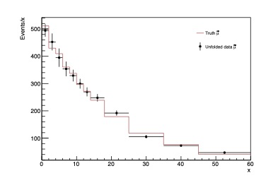
Iterative bayes with and
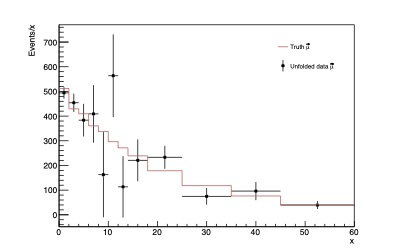
Singular Value Decomposition (SVD)
Singular Value Decomposition is an unfolding method that constructs a likelihood with the data Gaussian distributed. The mean is taken to be the expected bin count and a measured covariance . The regularization function is the discretized Tikhonov second derivative regularization. The constrained log-likelihood can be written down in matrix form as
SVD unfolding sets this expression to zero and solves for with the use of singular value decomposition. It also uses singular value decomposition to determine which of the data bins contribute the most to large fluctuations in the unfolded distribution and use that information to choose . The user actually choses an integer between 0 and the number of truth bins which then is translated into a value for that supresses the data bins that contribute the most to the unwanted large fluctuations in the unfolded distribution. So will result in a heavily regularized distribution and will return the ML solution.
Hocker and Kartvelishvili. Svd-based unfolding: implementation and experience. PHYSTAT 2011, 2011.
K. Tackmann. Svd approach to data unfolding. 1996. Nucl. Instrum. Meth. A 372 (1996) 469.
Code Example
// Instantiate a RooUnfoldFunc. Pass the regularization parameter k=8.
RooUnfoldFunc* unfoldFuncSvd = (RooUnfoldFunc*)spec.makeFunc(RooUnfolding::kSVD,8);
// Instantiate a RooUnfold object with RooFitHist as template type.
RooUnfoldT<RooUnfolding::RooFitHist,RooUnfolding::RooFitHist>* unfoldSvd = const_cast<RooUnfoldT<RooUnfolding::RooFitHist,RooUnfolding::RooFitHist>*>(unfoldFuncSvd->unfolding());
// Unfold and get the unfolded distribution and errors.
TVectorD svdUnfolded = unfoldSvd->Vunfold();
TVectorD svdErrors = unfoldSvd->EunfoldV(RooUnfolding::kErrors);
SVD with and
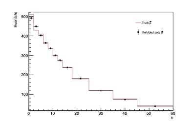 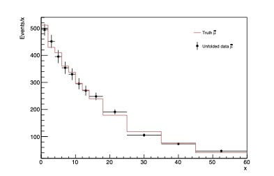
SVD with and
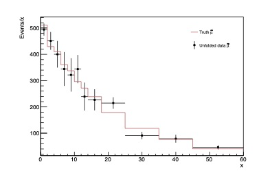 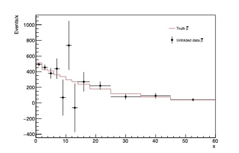
Iterative Dynamically Stabilized (IDS)
Iterative Dynamically Stabilized unfolding is an unfolding procedure that starts from an initial unfolded distribution very biased towards a normalized truth distribution. It then tries to improve the result by improving the response matrix with each iteration. The estimators are defined as
with being some initial truth distribution, a normalization constant that corrects for differences in MC and data, the expected number of truth events associated with fluctations in background subtraction, , the uncertainty on the measured data , the response matrix, a number between 0 and 1 and that regulates this fraction. This is used for an initial unfolded distribution and then improved by changing the response matrix with each iteration.
B. Malaescu. An iterative, dynamically stabilized method of data unfolding. arXiv:0907.3791.
Code Example
// Instantiate a RooUnfoldFunc
RooUnfoldFunc* unfoldFuncIds = (RooUnfoldFunc*)spec.makeFunc(RooUnfolding::kIDS,10);
// Instantiate a RooUnfold object with RooFitHist as template type.
RooUnfoldT<RooUnfolding::RooFitHist,RooUnfolding::RooFitHist>* unfoldIds = const_cast<RooUnfoldT<RooUnfolding::RooFitHist,RooUnfolding::RooFitHist>*>(unfoldFuncIds->unfolding());
// Unfold and get the unfolded distribution and errors.
TVectorD idsUnfolded = unfoldIds->Vunfold();
TVectorD idsErrors = unfoldIds->EunfoldV(RooUnfolding::kErrors);
IDS with and
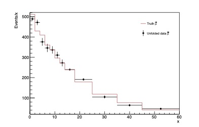
IDS with and
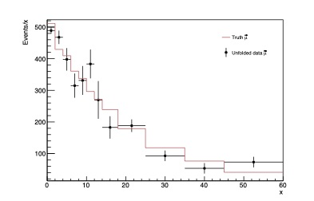 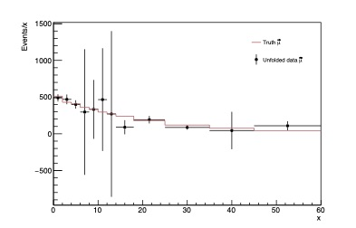
Gaussian Processes (GP)
Gaussian Processes uses Bayesian regression to define an estimator as the mode of the posterior distribution. The posterior distribution is constructed with Bayes' theorem from a Gaussian likelihood and a Gaussian Process(GP) prior. Regularisation is introduced via the kernel function of the GP. Depending on the prior knowledge one has on the truth distribution different choices of kernels are possible. The amount of regularisation is determined by the parameters of the kernel which can be varied until unfolding results show satisfactory. It is also possible to choose these parameters based on the maximization of the likelihood marginalized over the truth distribution.
The current implementation of RooUnfold has two kernel functions available:
- Radial kernel (Parameters: )
- Gibbs kernel (Parameters: ) with and and denoting two bin centers.
A. Bozson, G. Cowan, and F. Spano. Unfolding with Gaussian Processes. 11 2018.
Code Example
// Instantiate a RooUnfoldFunc. The regularization parameter determines the kernel.
// 1 = Radial kernel and 2 = Gibbs kernel.
RooUnfoldFunc* unfoldFuncGP = (RooUnfoldFunc*)spec.makeFunc(RooUnfolding::kGP,2);
// Instantiate a RooUnfold object with RooFitHist as template type.
RooUnfoldT<RooUnfolding::RooFitHist,RooUnfolding::RooFitHist>* unfoldGP = const_cast<RooUnfoldT<RooUnfolding::RooFitHist,RooUnfolding::RooFitHist>*>(unfoldFuncGP->unfolding());
// The unfolding automatically maximizes a marginalized likelihood to find
// the optimal kernel parameters. However, it is possible to tune the kernel parameters
// and therefore the regularization by hand. Add the parameters in the order of (A, L) and
// (A, b, c).
std::vector<double> kernelParm;
kernelParm.push_back(22);
kernelParm.push_back(0.00001);
kernelParm.push_back(9.9);
((RooUnfoldGPT<RooUnfolding::RooFitHist,RooUnfolding::RooFitHist>*)unfold)->SetKernelParm(kernelParm);
// Unfold and get the unfolded distribution and errors.
TVectorD gpUnfolded = unfoldGP->Vunfold();
TVectorD gpErrors = unfoldGP->EunfoldV(RooUnfolding::kErrors);
GP with a Gibbs kernel with maximized marginal likelihood optimized kernel parameters and the above chosen kernel parameters.
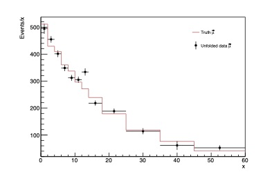 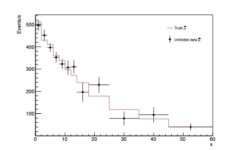
Covariance matrix and bias
As mentioned before, the estimators have two sources of error, variance and bias. These are the quantities that the analyst should first look at when assessing their unfolding algorithm. Also, one will see in upcoming sections that these quantities and derivations thereof can be used to compare unfolding algorithms and tune the regularization. Additionally, one needs the covariance matrix if one wants to use the unfolded distribution in a fit.
Covariance
Lets recall the definition of the covariance matrix.
All of the above mentioned algorithms have their own approach for estimating the covariance matrix. However, it is also possible to estimate the covariance matrix with the use of toy data. Generating toy data or "throwing toys" is sampling pseudo-data from probability distributions of the observed data . In particle physics, a very common choice is Poisson distributions with mean . These pseudo-data vectors can then be unfolded with the chosen unfolding algorithm and regularization parameter. In the limit of many toys these unfolded distributions can be used to calculate the covariance with the sample covariance
with being the -th unfolded bin of the -th toy for toy datasets.
Code Example
// Calculate the covariance matrix with the unfolding algorithm specific method.
TMatrixD cov = unfold->Eunfold(RooUnfolding::kCovariance);
// Set the number of toys.
unfold->SetNToys(1000000);
// Calculate the covariance matrix with toys.
TMatrixD covtoys = unfold->Eunfold(RooUnfolding::kCovToys);
Covariance normalized to correlation matrix for matrix inversion without and with toys()
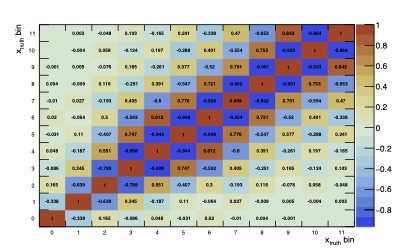
Covariance normalized to correlation matrix for iterative bayes with 2 iterations without and with toys()
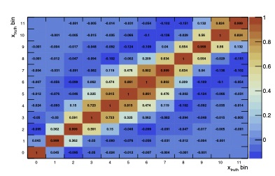 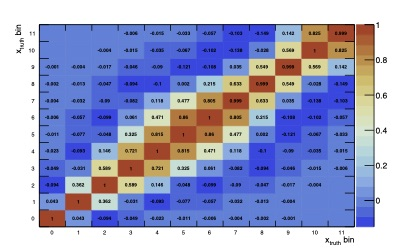
Note the large negative correlations with the matrix inversion unfolding as expected in the unregularized scenario. Iterative bayes with 2 iterations is on the contrary very regularized and mostly has very strong positive correlations.
Bias
Lets recall the definition of the bias.
Many of the above algorithms do not have an explicit definition for the bias. However, the same approach to pseudo-data generation as for the covariance matrix estimation can be used to estimate the bias of the unfolding framework. The bias for the -th unfolded bin can be estimated with
with being the -th bin of a truth distribution chosen by the analyst.
Code Example
// Calculate the bias with K=1000000 toys w.r.t. the truth distribution truthTestHist.
unfold->CalculateBias(RooUnfolding::kBiasToys,1000000, spec.makeHistogram(truthTestHist));
// Get the bias vector.
TVectorD bias = unfold->Vbias();
Bias calculation for matrix inversion and iterative bayes with 2 iterations unfolding with toys()
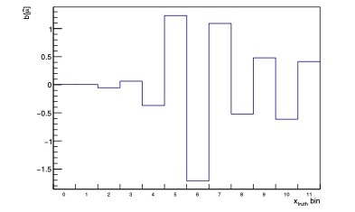 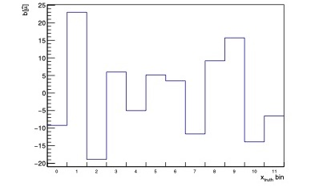
Note the very small bias for matrix inversion unfolding as expected in the unregularized case in contrast to the large bias of the very regularized case of the iterative bayes 2 iterations unfolding.
MSE and coverage
In this section two quantities are discussed that can be used to assess an estimator and fine tune the regularization parameter.
MSE
As mentioned before, two sources of error of an estimator are the bias and the variance. One could choose an estimator and regularization parameter that minimizes both sources of error. A very common figure of merit is the mean squared error averaged over the bins of the truth histogram.
However, it is possible that bins with a large bin count relative to others in the histogram will dominate. An alternative weighted MSE can be used to avoid this.
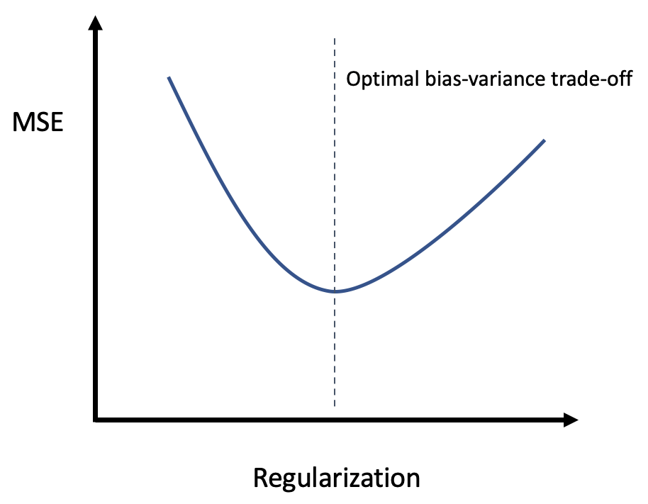
Coverage
When one has an estimate for a truth bin and a corresponding variance one can construct confidence intervals . is a positive integer that determines the size of the confidence interval eg. 1 for a 68.3% confidence interval. The estimator should in the limit of infinite repeated experiments cover the true distribution 68.3% of the times. Under the assumption that the observed data is Gaussian distributed one can calculate this coverage probability in closed form
with being the Standard Gaussian cumulative distribution function and corresponding the size of the constructed confidence interval. The coverage is also connected to regularization. An unbiased estimator(), like the ML estimator, will have a perfect coverage probability of 68.3%. In case bias is introduced by regularizing then the estimators are expected to undercover. It is up to the analyst to decide what amount of undercoverage is acceptable.
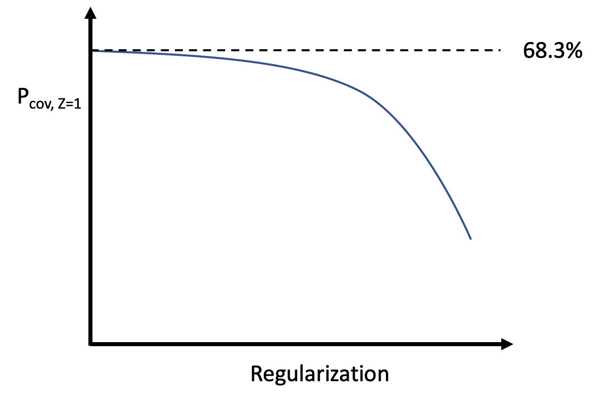
Code example
// Calculate the bias with K=1000000 toys w.r.t. the truth distribution truthTestHist.
// This is needed for the coverage probability calculation.
unfold->CalculateBias(RooUnfolding::kBiasToys,1000000, spec.makeHistogram(truthTestHist));
// Calculate the coverage probability for each bin for 1-sigma confidence intervals.
TVectorD cov = unfold->CoverageProbV(1);
Coverage probability for matrix inversion and iterative bayes with 2 iterations unfolding. 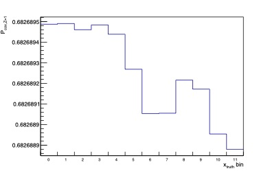 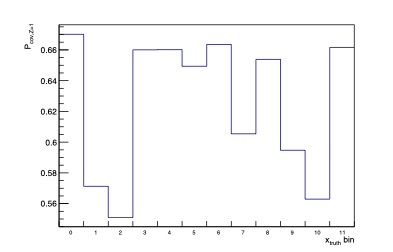
Note the clear undercoverage for the regularized scenario of the iterative bayes with 2 iterations and the almost perfect 68.3% coverage of the unregularized matrix inversion unfolding.
M. J. Kuusela. Uncertainty quantification in unfolding elementary particle spectra at the large hadron collider. pages 84–86, 2016.